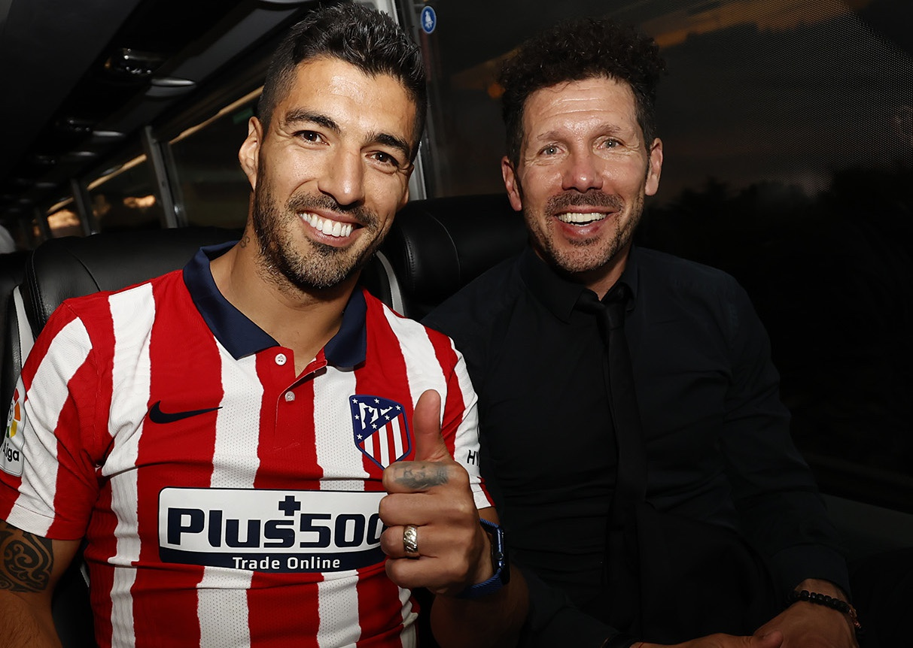
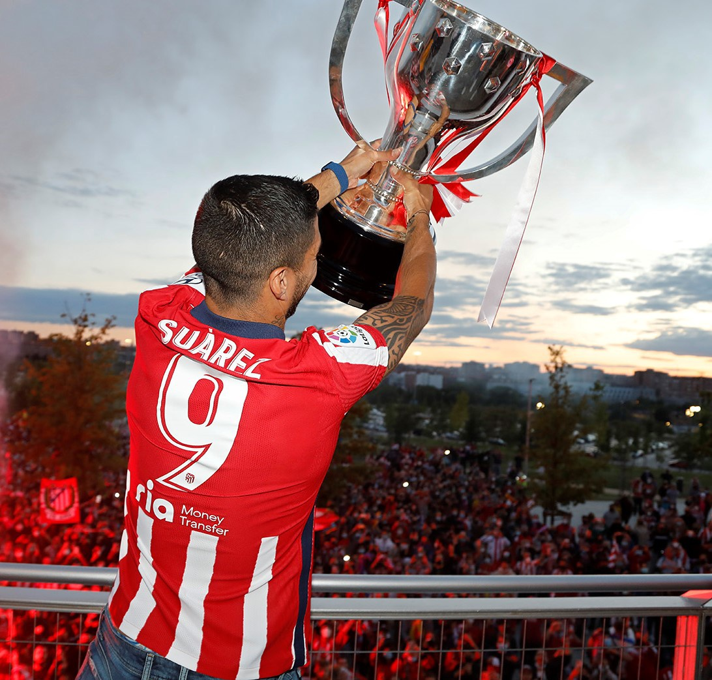
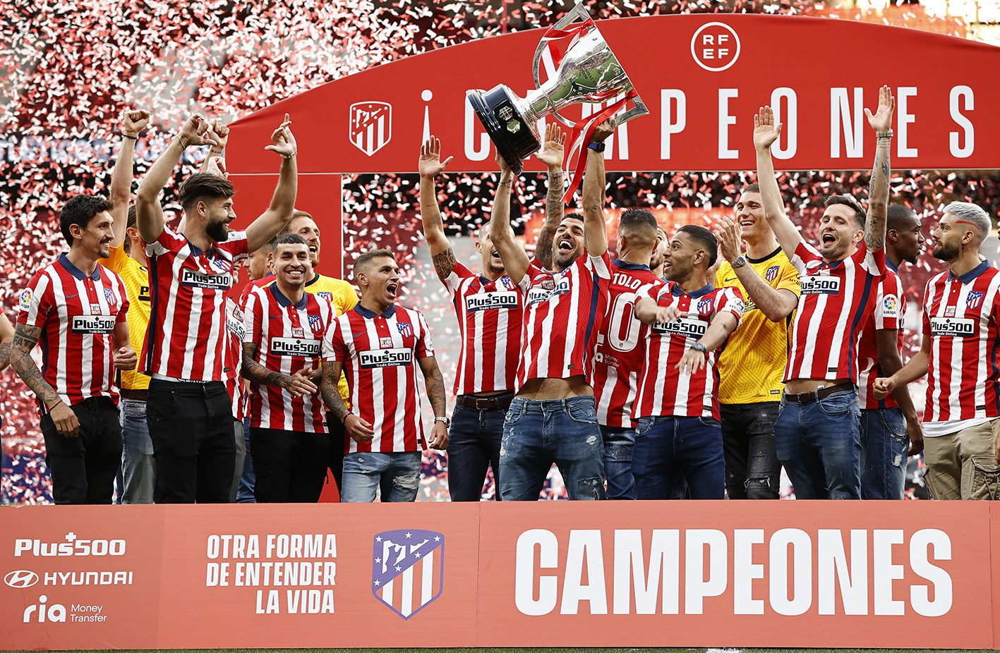

Trả lời phỏng vấn chương trình El Partidazo de COPE sau khi cùng Atletico Madrid vô địch La Liga, tiền đạo Luis Suarez đã tiết lộ mọi bí mật ở mùa hè năm ngoái khi anh bị Barcelona đuổi ra đi. 
Suarez và HLV Simeone đang cực kỳ hạnh phúc ở Atletico Madrid
Theo đó, Suarez cho biết: “HLV Koeman có thể bị áp lực từ ban lãnh đạo Barcelona muốn đẩy tôi ra đi, nhưng bản thân ông ấy cũng không có chút chính kiến gì. Nếu như ngày hôm trước, ông ấy nói không tin tưởng vào tôi, thì ngày hôm sau lại cho rằng, sẽ cần tôi thi đấu trận gặp Villarreal nếu tôi chưa ra đi”.
Trận gặp Villarreal là trận mở màn mùa giải La Liga 2020-2021, khi đó Barcelona hoàn toàn rơi vào cuộc khủng hoảng nghiêm trọng với tương lai của Suarez chưa quyết định, còn siêu sao Lionel Messi thì ở lại nhưng trong tâm trạng bằng mặt mà không bằng lòng.
Suarez vừa kể lại mọi sự tình này trên chương trình El Partidazo de COPE. Anh nói: “Tôi thực sự đau khổ khi bị Barcelona đề nghị tập riêng. Một ngày, Koeman nói với tôi rằng, “nếu ngày mai chuyện ra đi của cậu chưa giải quyết, tôi sẽ trông cậy vào cậu ở trận gặp Villarreal được chứ?”. Điều này trái ngược ông ấy từng nói không tin tưởng vào tôi. Tuy nhiên, tôi nghĩ rằng mọi quyết định (tập riêng nhằm để đuổi ra đi) là đến từ ban lãnh đạo Barcelona”.
Cũng theo đó, Suarez cũng cảm thấy khó hiểu là: “Bartomeu (cựu chủ tịch Barcelona) hay bất cứ người nào khác trong ban lãnh đạo đều không gọi cho tôi, để chỉ nói về quyết định là họ không còn cần tôi nữa. Thay vào đó, họ nói trên báo chí và ám chỉ đủ điều. Thật lạ lùng. Bởi vì, họ hoàn toàn có thể nói trực tiếp với tôi”.
Suarez nâng cao cúp vô địch La Liga trong sự tiếc nuối của nhiều fan Barcelona
Chính cách đối xử tệ bạc này của ban lãnh đạo cũ Barcelona, khiến Suarez hết sức thất vọng và nuôi một mối hận trong lòng, bởi vì dù sao anh cũng đang là cầu thủ xếp thứ 3 trong danh sách ghi bàn mọi thời đại của đội bóng xứ Catalan (198 bàn) chỉ sau cựu danh thủ Cesar Rodriguez (232 bàn) và siêu sao Lionel Messi - người bạn thân - ghi nhiều nhất 672 bàn.
Do đó, Suarez buộc phải tìm đường ra đi để cứu vãn sự nghiệp, nhưng lại bất thành cuộc chuyển đến Juventus và vụ thi lấy quốc tịch Ý có gian lận bị phanh phui, khiến tiền đạo kỳ cựu người Uruguay gần như rơi vào bế tắc và muốn bị trầm cảm vì ở lại Barcelona không xong, còn chuyện ra đi cần sớm thực hiện thì không biết sẽ về đâu. 
Ngôi vô địch La Liga chính là cuộc rửa hận ngọt ngào của Suarez với CLB cũ Barcelona đã ruồng rẫy mình
Giữa lúc đó, Atletico Madrid đến và chào đón Suarez, nhưng trong một hoàn cảnh không thể ngờ. Chính HLV Diego Simeone kể lại với kênh ESPN trong chương trình F360 cũng mới đây: “Khi CLB gọi cho tôi, nói là có muốn ký hợp đồng với Suarez không? Tôi hỏi lại, có thật sự nghiêm túc không? Vì tôi không thể tin là Barcelona sẽ cho một “sát thủ” như vậy đến Atletico Madrid”.
HLV Diego Simeone nói thêm: “Sau đó, tôi đề nghị CLB để tôi gọi trực tiếp cho Suarez. Điều đầu tiên tôi nói với Suarez, 'Nghe này Luis, chúng tôi cần chiến thắng và bạn có muốn chiến thắng hay không? Mọi cánh cửa đều đã mở'.
Chỉ vậy, vì chúng tôi và Suarez đều cần nhau. Khi mọi sự hoàn tất, tôi nghĩ đây hẳn sẽ là một năm rất tốt đẹp lắm đây. Sự thực là như vậy, Suarez đúng kiểu một cầu thủ được ban cho phép thuật, một người chiến thắng, và đã đem điều đó cho Atletico Madrid. Cậu ấy thực sự là một món quà vô giá mà chúng tôi có được từ Barcelona”.
Tin Liên Quan
Link bài gốc